Institutional • Design–Bid–Build + VDC • Vancouver, BC
The UBC Recreation Centre project involved the delivery of a fully coordinated wet and dry fire sprinkler system for a major institutional facility on the University of British Columbia campus. The project required close coordination with structural, architectural, and MEP disciplines to ensure full code compliance, constructability, and seamless integration within a complex building environment.
During installation, the MEP contractor (Division 15) and Prime Contractor (ETRO) raised concerns regarding deviations between the fully coordinated BIM model and the installed sprinkler piping. Reported deviations exceeded 2 inches in several areas, triggering a request to redo substantial portions of the system.
I arranged an immediate site review with the site superintendent and foreman to assess deviation severity and perform a root-cause analysis. The investigation identified discrepancies caused by uncoordinated changes to structural elements, other MEP systems, and site-driven modifications not reflected in the BIM model.
To avoid a full system reinstallation, I engaged a 3D scanning firm to capture accurate point clouds of the installed conditions. These scans were overlaid with the coordinated BIM model, allowing precise identification of non–fire-protection deviations affecting the system. The findings were formally presented to the MEP contractor and Prime Contractor.
As a result, only one localized area required minor rework to the fire protection system. The approach avoided a complete system redo, preventing significant schedule delays and substantial cost impacts while maintaining compliance and installation quality.
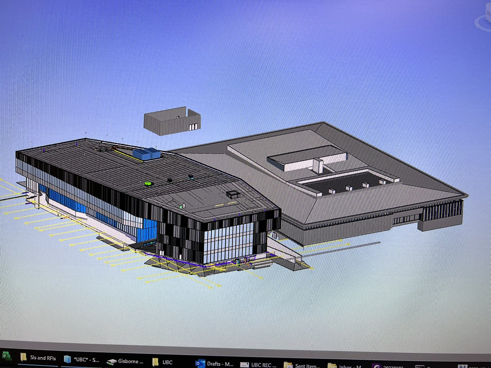
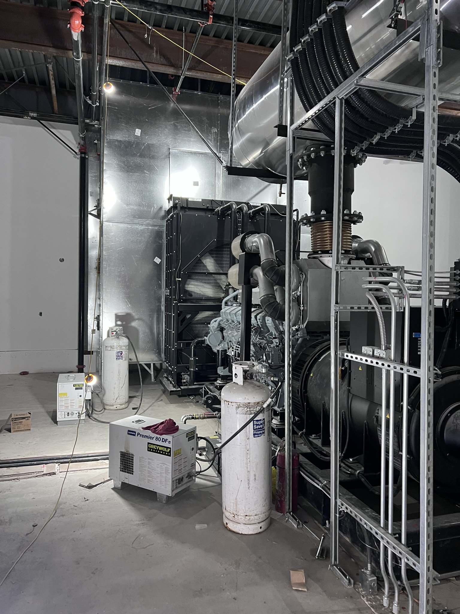
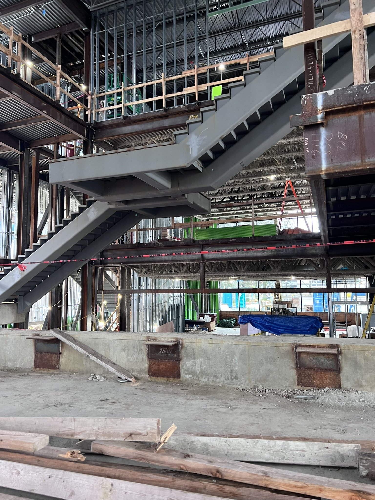
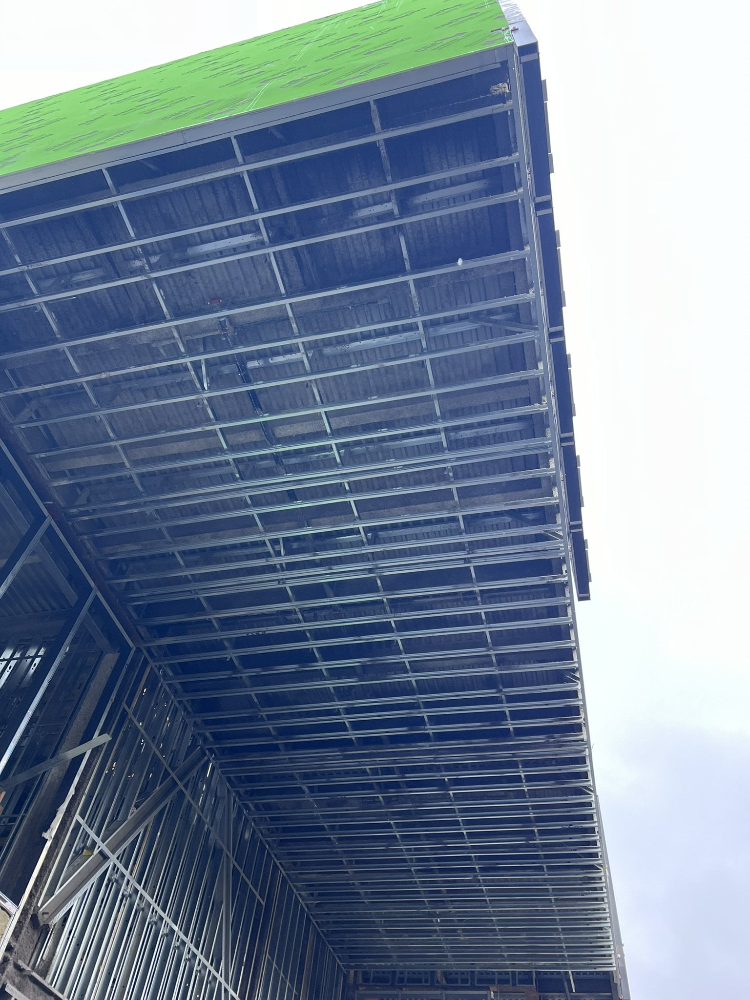
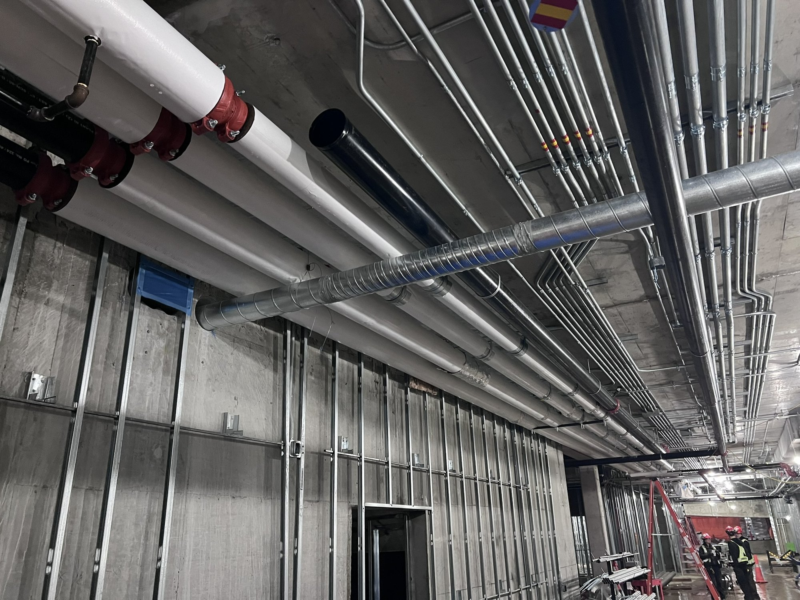
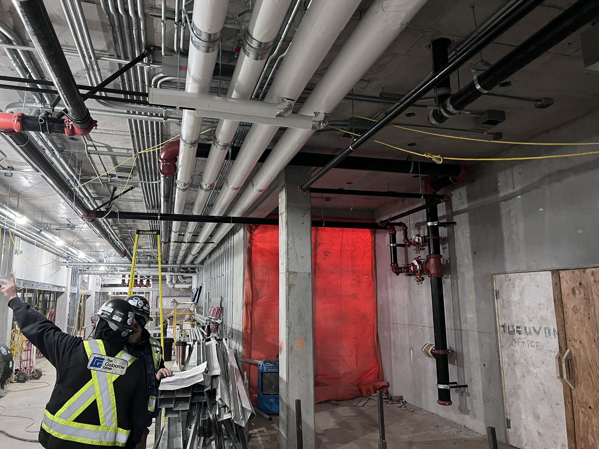
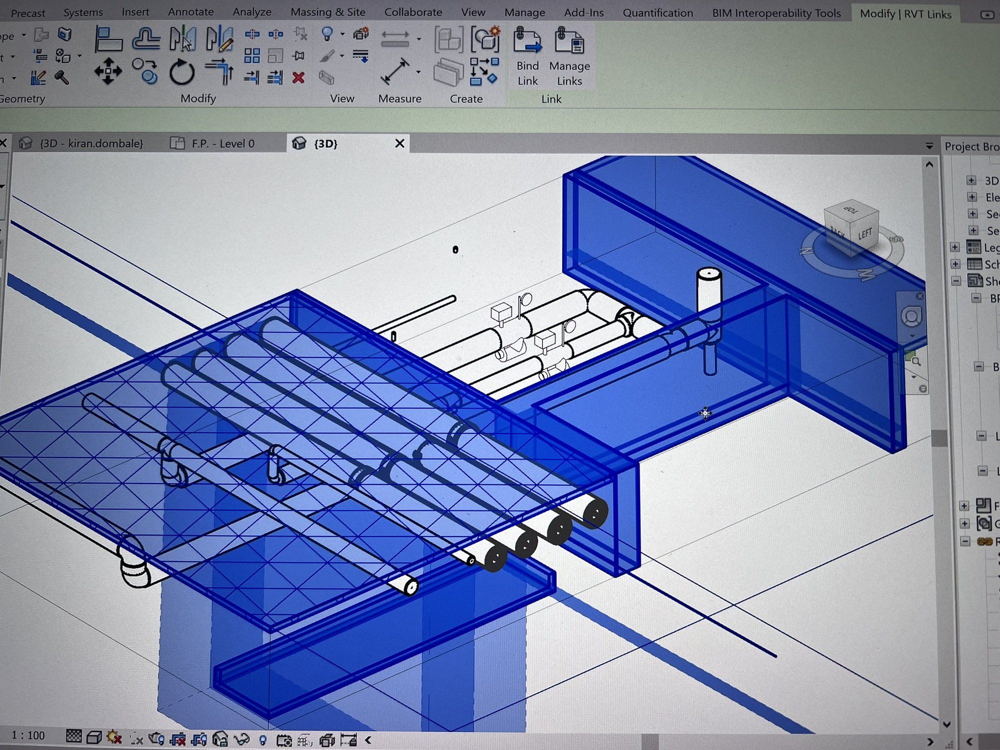
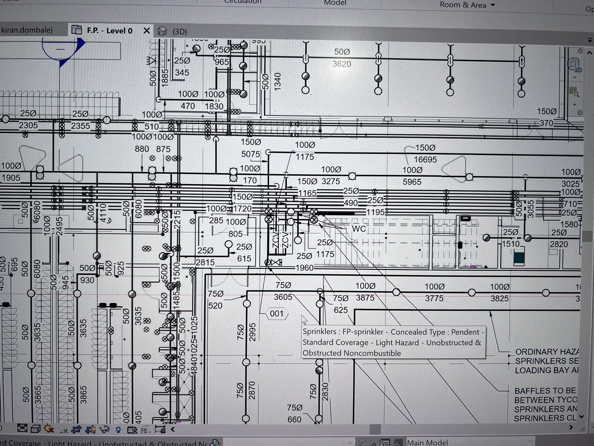
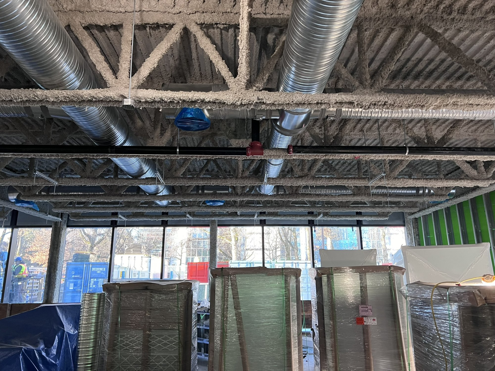
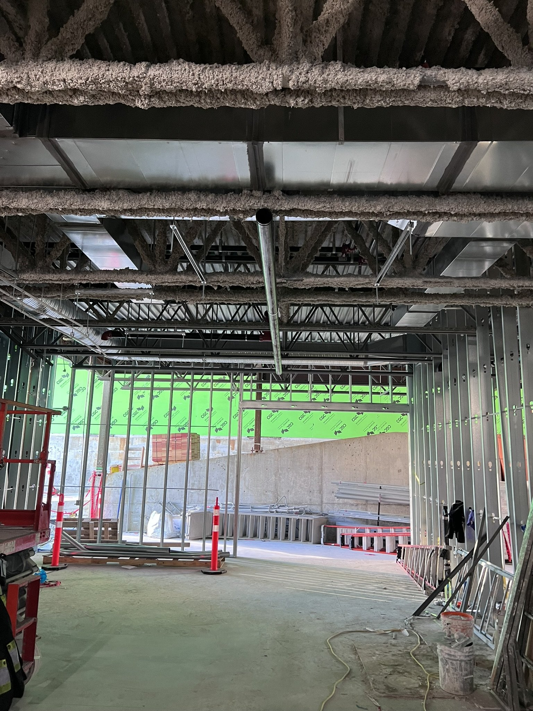
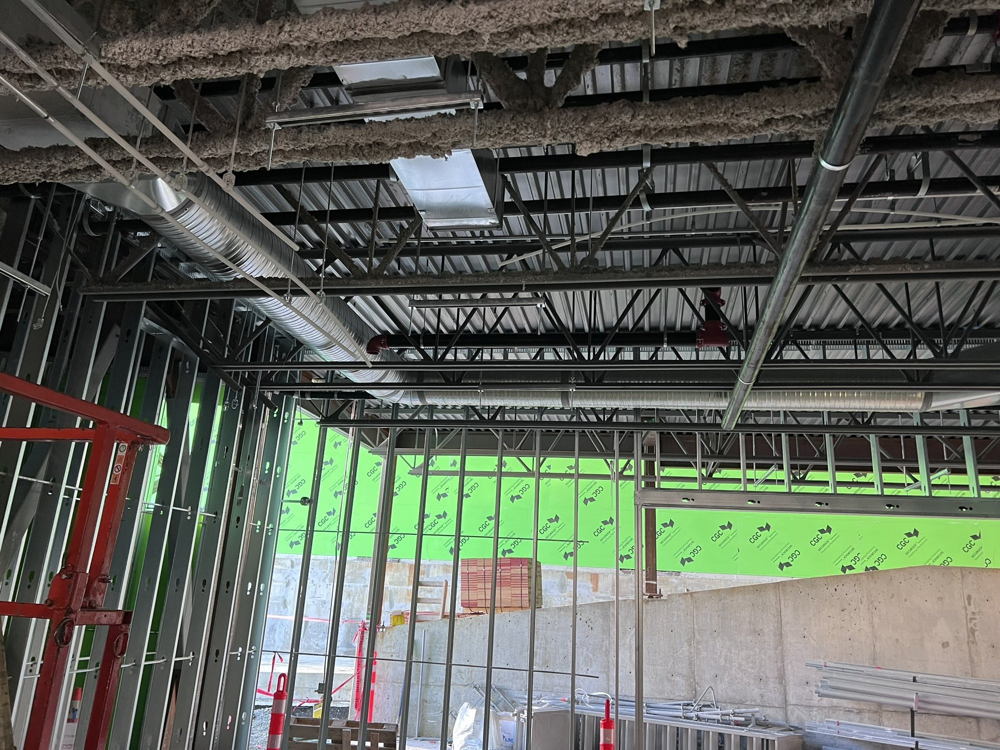
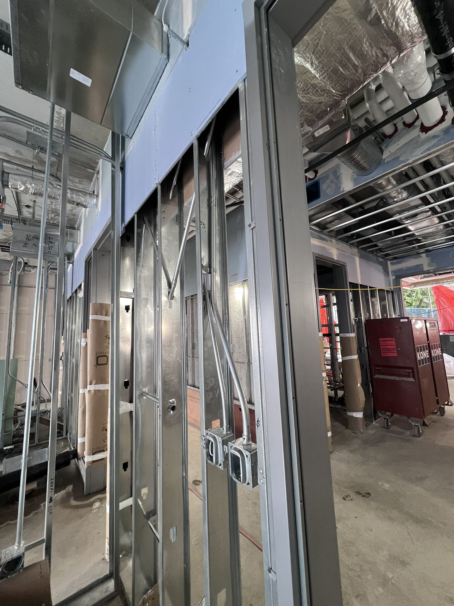